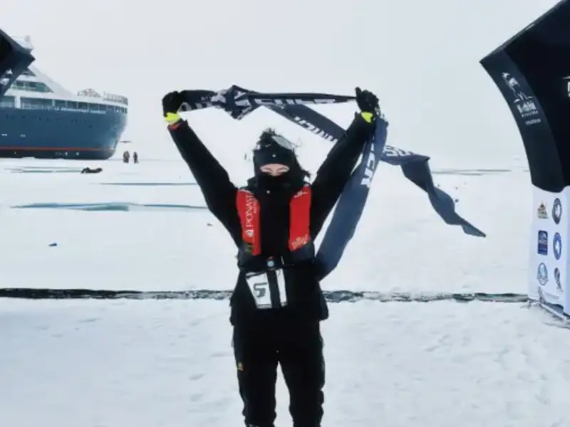
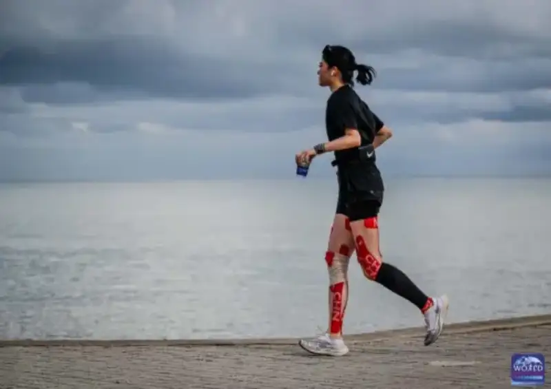
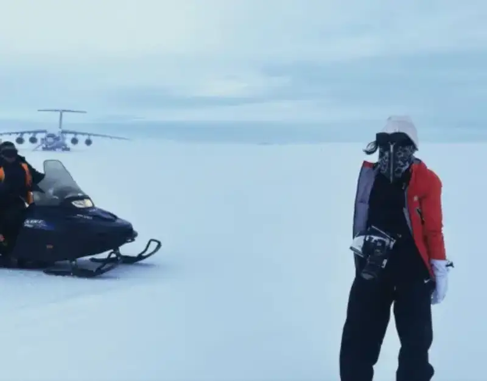
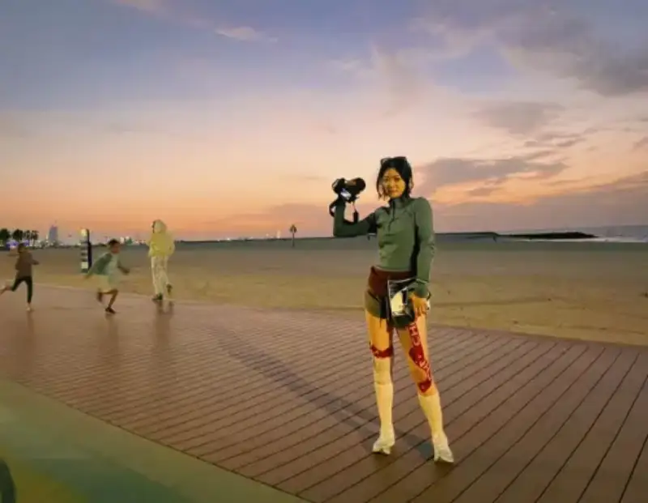
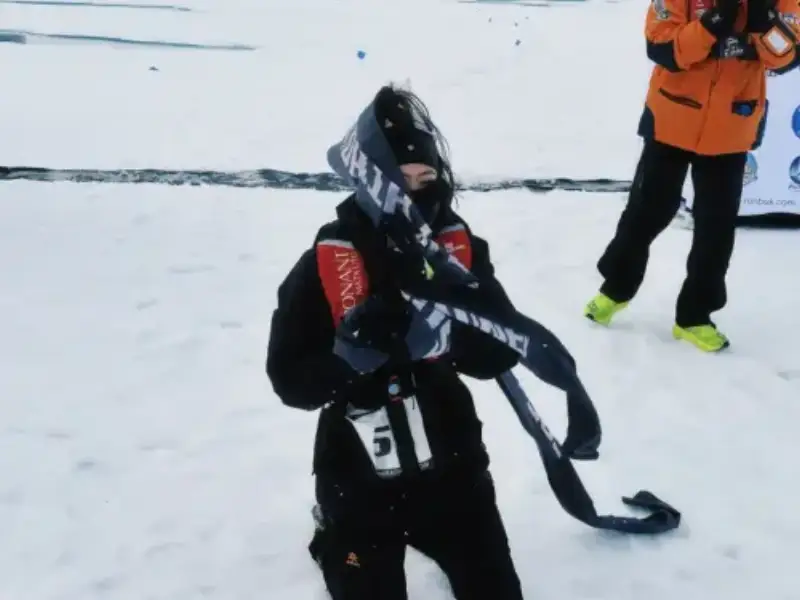
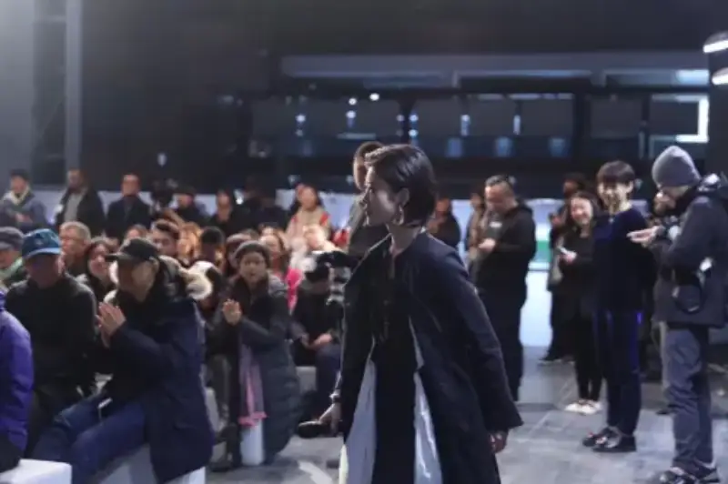
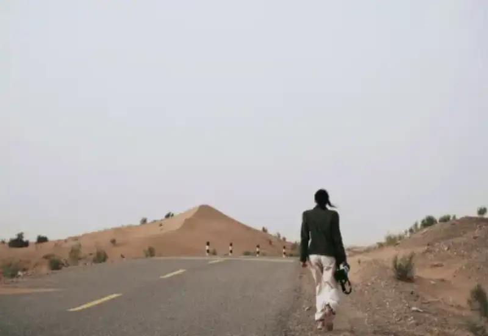

Du Yilin wears many labels: a World Marathon Challenge runner, a member of the Chinese Female Photographers Association, a New York University graduate. Each label opens into a story. She does not fear hardship and loves to challenge herself. At only 22, she has a stubborn streak all over her.
Running from Antarctica to Miami, selling photos for charity, and being chosen as the director of NYU's 2024 annual gala, Du Yilin is like the often-mentioned other people's child. But behind the shine, only she knows the moments when she gritted her teeth. Everyone has their own struggle. No matter how hard or painful it is, what matters is that you have the heart and the courage to beat it.
Challenge: after escaping the Arctic, I began to long for the world
If you did not hear her tell it, you would not guess that the cheerful, confident Du Yilin was once a victim of school bullying, and suffered from mental health problems.
In middle school, school bullies pushed her, and she fell down stairs. The inner bone of her right ankle cracked. At that age, in her teens, Du Yilin did not talk much, and with a strict family upbringing she had almost no one to tell. She chose to endure the physical pain in silence. Psychological pressure also came in waves, and at that age she was both stubborn and lost.
An Arctic marathon pulled her out of that emotional whirlpool.
In October 2015, 13-year-old Du Yilin flew with her father to Kangerlussuaq Airport, inside the Arctic Circle, for the first half marathon of her life. Nine years later, many details are still vivid for her.
After the starting gun, she moved with the pack into endless snow mountains and glaciers. Back then, Du Yilin was unsure of both the road underfoot and the road of life. At that time I knew nothing of 21 kilometers, understood nothing of life, barely knew nature, and had not settled who I was or what my future would be.
Because she had never trained and was not prepared, after just 5 kilometers she felt spent, and other runners pulled ahead. She entered a stretch of ice cap, where wind blew the snow off the ice and visibility kept dropping.
Her phone froze and shut off, so she could not check her position. She did not dare stop, and kept moving in the direction she thought right. She walked with uncertain steps. Looking back, the girl who barely escaped said it was luck that she finished.
In that long, desperate time, facing life and death, Du Yilin thought a lot, and gained new views of life and the world. In the Arctic Circle, in Greenland, I was lost and afraid. But after that, I began to long for a richer world and more fantastic journeys.

Exploration: marathons and photography let me see the world
In 2023, Du Yilin ran the New York Marathon and finished the first full marathon of her life. Even though she had already run 25 half marathons, the moment she decided to conquer 42.195 kilometers, she still had to gather courage before the first step.
This year, she accepted the Runbuk 2024 North Pole Marathon. On board the Shokalskiy, crossing the ice, Du Yilin reached the place she both longed for most and feared most: 90 degrees north, the northern end of Earth's axis. On an unnamed floating ice sheet, she began another run.
Like nine years before, there was still no signal, and the silence was extreme. Unlike nine years before, this time Du Yilin knew exactly what 42 kilometers meant, and the road ahead was in her own hands.
Over 120 laps, each lap crossed 24 time zones. Fear and pain were still there during the run, but when she crossed the 42.195 finish line, all feeling vanished. She was no longer afraid, and she felt no joy either.
I am like an alien species, floating here. I seem to be an observer watching everything, but also an intruder being watched in real time. The world does not belong to us. We belong to the world. Du Yilin reflected: I did not stand at the northern end of the world. I only stood at a higher place than my former self. I did not conquer the world. I only beat myself again.
In Du Yilin's life, running developed at the same time as her study of photography, which became her other eye for exploring the world.
Eight years ago, she tried a camera and never put it down. Trained professionally at NYU's Tisch School of the Arts, Du Yilin talks to the world through the shutter. This is an inward process: behind the lens she focuses more on nature and humanity, and thinks about what lies beneath the surface. It is also an outward process: she freezes story-filled moments, and expresses her insight and attitude.

Change: I want more people to hear the voices on the margins
The world she has seen is shaping Du Yilin, and she has gathered courage to give something back to the world.
Growing up, she has been to many places, and met people from different countries, ages, and trades. Growing up in changing settings, Du Yilin formed a unique view of the world around her.
At the same time, through strong culture shock, through overcoming mental health problems, and through meeting hardship again and again, the deeply empathetic Du Yilin realized one thing: how important it is to hear the voices on the margins.

If, in 2015, Du Yilin ran marathons to heal the trauma of bullying, then later, running again and again felt more like a mission. A girl who once stood in the rain wants to hold an umbrella over more people. Du Yilin says she wants to inspire others, especially those who feel unseen, insecure, and in difficulty.
This year's North Pole Marathon, Du Yilin was the last runner to finish. She says that although crossing the line was silent, in her view she expressed her love of life and nature through action, and this voice is resonant. Everyone has their own struggle. No matter how hard or painful it is, what matters is that you have the heart and the courage to beat it.

Since taking up the camera, Du Yilin has sold her photos for charity several times, and given the money to public causes.

Now, having finished college, Du Yilin is applying to graduate school. She says she has a small wish: to work in communications or planning for a nonprofit or a cultural institution, and to build a proper platform for vulnerable groups. I hope I can give a voice to marginalized groups, and contribute to a world that values every voice.
